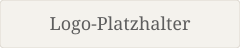

Storl-Akademie Styleguide
Verbindliche Referenz für Farben, Schriften, Abstände und Komponenten auf storl-akademie.de. Gilt für Inhalte in Gutenberg und Elementor gleichermaßen. Grundlage: Brand Guidelines 2026, Stand 03.09.2026.
Noch offen:
Die Schrift Arek liegt nicht als Webfont vor. Alle Überschriften auf dieser Seite werden ersatzweise in einer Serifenschrift dargestellt und sehen deshalb noch nicht richtig aus.
Logo und Signet fehlen als Dateien — unten steht ein Platzhalter.
Farben
Der Name ist der verbindliche Bezug. Die globalen Farben in Gutenberg und Elementor tragen dieselben Namen, damit im Editor nicht nach Hex-Werten gesucht werden muss.
Primärfarben
Sekundärfarben
Im Quelldokument tragen „Grape extra light“ und „Grape extra light 2“ denselben Hex-Wert. Bis das geklärt ist, gibt es hier nur eine der beiden.
Schriftfarben
Schriften
Arek für Überschriften, Buttons und den Weiterlesen-Link. Mulish für Fließtext und alles andere. Andere Schriften werden nicht eingesetzt.
Typografie
Die Größen sind feste Stile. Im Editor werden keine Zwischenwerte eingetragen — wenn ein Stil fehlt, wird er hier ergänzt.
Logo

Farbgebung
Auf hellem Grund steht Logo und Signet in Grape, auf farbigen Hintergründen in Weiß. Andere Farbvarianten werden vermieden.
Schutzraum
Rund um das Logo bleibt mindestens die Höhe und Breite des Akademie-Anfangsbuchstabens „A“ frei. Passt das nicht, wird das Logo verkleinert statt der Schutzraum verringert. Beim Signet ist der Schutzraum der halbe Kreisradius.
Mindestgröße
Im Web und in der App 115px breit (bei 72 dpi), im Druck 25mm (bei 300 dpi). Nach oben ist die Größe frei, solange Proportionen und Schutzraum stimmen.
Icons
Alle Icons liegen als SVG und PNG unter assets/icons/. Sie
sind in Grape (#815B6C) gezeichnet und bringen ihre Farbe selbst mit — sie
übernehmen nicht die Textfarbe der Umgebung.
Einsatz
Illustrierte Icons stehen auf Kursseiten und zeigen Leistungen und Kursbestandteile auf einen Blick. Saisonale Pflanzen-Icons (Frühlings-, Sommer-, Herbst-, Winterpflanzen) ordnen Inhalte einer Jahreszeit zu. Zusammen mit einer Linie werden Icons außerdem als Divider eingesetzt.
Buttons
Primary Button
Verlinkt auf interne Inhalte und Seiten außerhalb der Akademie-Seite. Steht auf weißem Hintergrund.
Secondary Button
Verlinkt auf externe Inhalte außerhalb der Akademie-Seite. Steht auf farbigen Flächen, z. B. im Newsletter-Modul oder im Footer.
Maße
Arek · 20px · 500 medium · Zeilenhöhe 30px · Laufweite 0,2px. Abstand vom Text zum Button-Rand: 25px links und rechts. Text mittig zentriert.
Links
Textlinks im Fließtext stehen in der Bold-Variante der Textschrift. Die Farbe sagt, wohin der Link führt.
Die Termine stehen im Jahreskurs — das ist ein Link innerhalb der Akademie-Seite.
Mehr Hintergründe gibt es auf Storl.de — das ist ein Link auf externe Inhalte.
Weiterlesen-Link
Steht unter einem gekürzten Text, mittig, mit Pfeil nach unten. Abstand zum Text: 24px.
Divider
Eine Linie mit einem Icon in der Mitte trennt Abschnitte innerhalb einer Lektion und kündigt an, was folgt. Es gibt Divider zu Heilpflanzen, Brauchtum, Erkennungsmerkmalen, Küche, Rezepten und Meditation sowie einen generischen mit dem Akademie-Blatt.
Text davor.
Text danach.
Das Illustrationselement sitzt mittig in einem Band von 135px Höhe.
Abstände
Die senkrechten Abstände hängen an der Überschriftenhöhe von 40px. Ändert sich eine Überschrift, ändern sich die Abstände mit.
| Wo | Wert | Token |
|---|---|---|
| Zwischen Modulen und Elementen | 100px | --space-module |
| Über einer Überschrift | 40px (1 Überschriftenhöhe) | --space-above-heading |
| Zwischen Überschrift und Text | 13px (⅓ Überschriftenhöhe) | --space-below-heading |
| Zwischen Subline und Überschrift | 10px (¼ Überschriftenhöhe) | --space-subline |
| Text über einem Bild | 40px | --space-text-image |
| Bild über folgendem Text | 70px | --space-image-text |
| Text zum Weiterlesen-Link | 24px | --space-text-link |
| Band für Divider-Illustrationen | 135px | --divider-block |